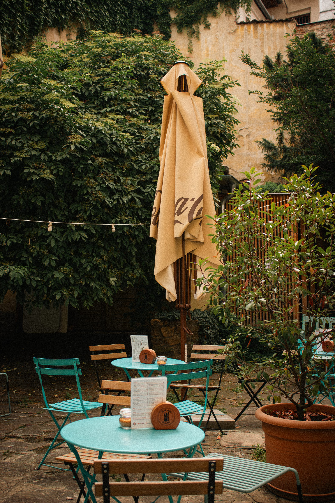
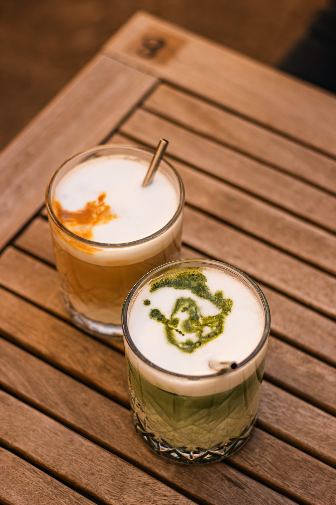
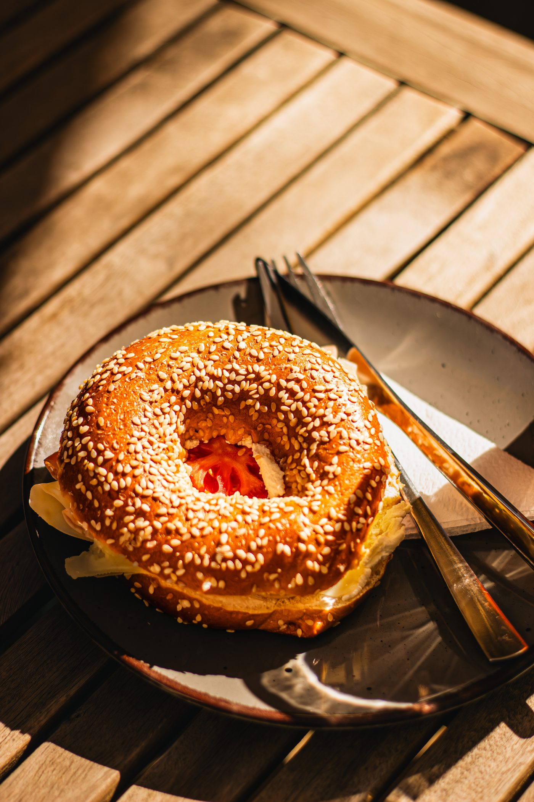

Místo pro práci,setkání i odpočinek
Mitte je brněnská kavárna a místo, kde se potkává dobrá káva s lidmi, kteří ji mají rádi. Vlastní pražená káva, domácí dezerty a snídaně — na Panské v centru i v Bohunicích.
Dobrá káva
a poctivá práce
Už od roku 2012 jsme součástí brněnské kavárenské scény a od prvních dnů stavíme na kvalitní kávě, poctivé práci a chuti dělat věci trochu jinak. Máme vlastní kávu, kterou připravujeme v našich kavárnách, a k ní přidáváme domácí dezerty, snídaně a další věci, které k dobrému kavárenskému zážitku patří.
Mitte je místo pro ranní espresso, dlouhé snídaně, setkání s přáteli i chvíle, kdy si prostě chcete na chvíli sednout a zpomalit.


Dvě kavárny,
jedna Mitte
Centrum na Panské 7 a klidnější pobočka v Bohunicích, kousek od nemocnice. Obě se stejnou vlastní kávou a stejnou chutí dělat věci trochu jinak.
Pár věcí,
které si oblíbíte
- Flat white98 Kč
- Matcha latte105 Kč
- Cortado75 Kč
- Limonáda 300 ml78 Kč
- Ovesná kaše98 Kč
- Aperol spritz155 Kč
Bydlení v srdci
Brna
Moderní apartmány pár kroků od kavárny — ideální na víkend ve městě, pracovní pobyt i delší návštěvu Brna.